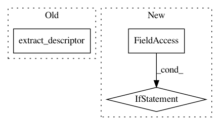

ff0291e54a32fe0fbe071487c82b26f6a60b71e1,autokeras/search.py,Searcher,add_model,#Searcher#Any#Any#Any#Any#Any#,89
Before Change
y_test,
False).train_model(**self.trainer_args)
accuracy += 0.005 * len(Graph(model, False).extract_descriptor().skip_connections)
accuracy = min(accuracy, 1)
model.save(os.path.join(self.path, str(self.model_count) + ".h5"))
After Change
x_test,
y_test,
False).train_model(**self.trainer_args)
if self.verbose:
print("Saving model.")
model.save(os.path.join(self.path, str(self.model_count) + ".h5"))
plot_model(model, to_file=os.path.join(self.path, str(self.model_count) + ".png"), show_shapes=True)
model_id = self.model_count
In pattern: SUPERPATTERN
Frequency: 4
Non-data size: 3
Instances
Project Name: jhfjhfj1/autokeras
Commit Name: ff0291e54a32fe0fbe071487c82b26f6a60b71e1
Time: 2018-05-17
Author: jin@tamu.edu
File Name: autokeras/search.py
Class Name: Searcher
Method Name: add_model
Project Name: jhfjhfj1/autokeras
Commit Name: a8eabdad14eee8a47257248fa271700fcce939cb
Time: 2018-05-01
Author: jhfjhfj1@gmail.com
File Name: autokeras/search.py
Class Name: BayesianSearcher
Method Name: search